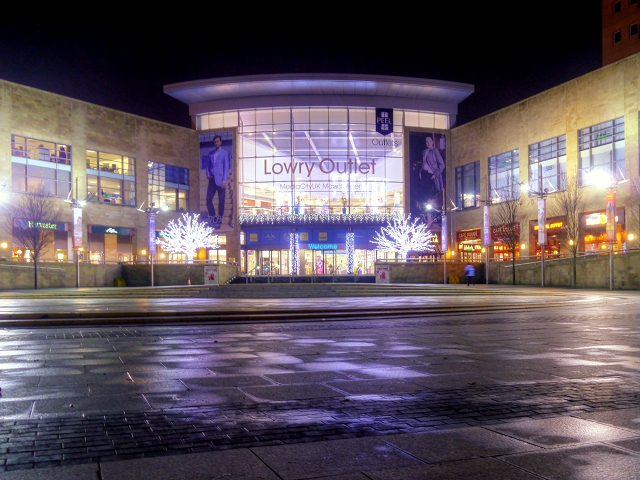
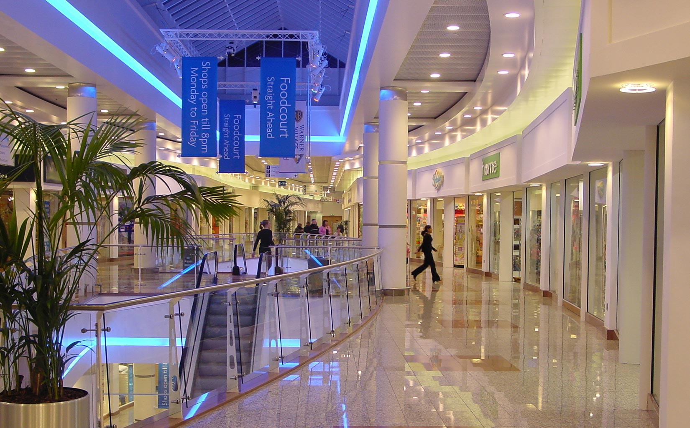

Salford Quays Shopping Centre is a well-liked location for dining, shopping, and entertainment. It is located close to Manchester's downtown and has grown to be a popular destination for both residents and visitors.Salford Quays Shopping Centre, popularly referred to as The Quays, is an important hub for shopping and entertainment. Covering an area of almost 1.5 million square feet, the centre has over 100 stores, including independent retailers, high street brands, and a sizable food court. Visitors can take advantage of a movie complex, a gaming centre, a fitness centre, and a range of dining options, from informal eateries to fine dining places, in addition to shopping.
They have wide range of shops with more then 80 stores,it including well known high street names, designer labels and other Shops. Also the Customers will likely to find something that suits their needs because this their needs because this variety offers a wide range of tastes and price points.
Salford Quays has several bus routes and a tram stop close by, making it simple to get to through public transit. If you prefer to drive, the shopping centre offers plenty of parking spaces.
Salford Quays Shopping Centre, popularly referred to as The Quays, is an important hub for shopping and entertainment. Covering an area of almost 1.5 million square feet, the centre has over 100 stores, including independent retailers, well-known high street brands, and a sizable food court. Visitors can take advantage of a movie complex, a gaming centre, a fitness centre, and a range of dining options, from informal eateries to fine dining places, in addition to shopping.
